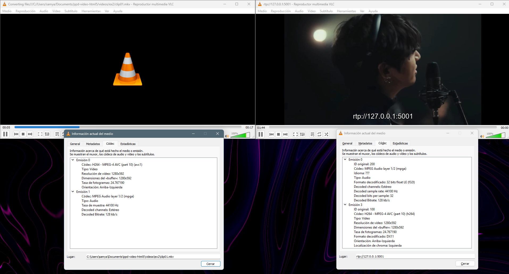
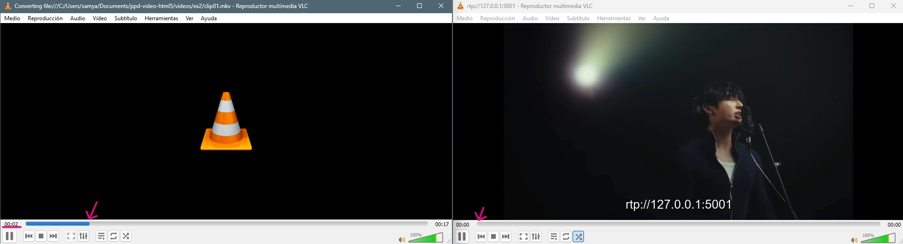
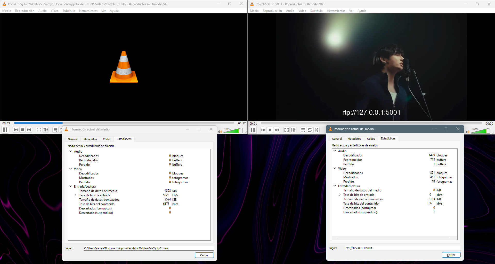
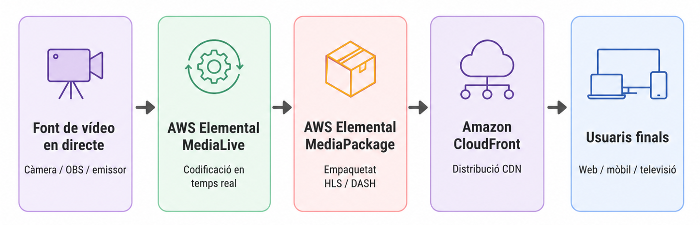

Exercici 1: Clip de vídeo incrustat en HTML 5
Tasca 1.1
Per aquesta tasca he utilitzat un clip gravat amb el mòbil. El fitxer original era
IMG_3955.MOV i, segons MediaInfo, estava codificat amb vídeo AVC/H.264, resolució 3840 x 2160, 25
fps i una durada de 28,123 segons. La taxa de bits del vídeo era d’uns 23,2 Mb/s i l’àudio estava en AAC LC a
182 kb/s.
Com que el vídeo original superava els 20 segons, l’he retallat amb Avidemux. També he reduït la resolució, perquè el fitxer original era 4K i, per a una publicació web senzilla, no calia mantenir una mida tan alta. A més, he revisat l’orientació, ja que MediaInfo indicava una rotació de 90° i en obrir-lo a Avidemux es veia que podia aparèixer girat.
He generat dues versions del clip. La primera és en MP4 amb H.264/AAC, perquè és una combinació molt compatible amb navegadors i dispositius. La segona és en WebM amb VP9/Opus, per tenir una alternativa de reproducció en navegadors compatibles amb aquest format.
En el cas del WebM, la primera exportació em va quedar massa gran, amb una mida de 121.584 KB. Per això vaig tornar a revisar la configuració a Avidemux i vaig ajustar millor la codificació: vaig mantenir el format WebM amb vídeo VP9 i àudio Opus, però vaig reduir la taxa de bits del vídeo i vaig configurar l’àudio amb una taxa més adequada per a web. També vaig haver de remostrejar l’àudio a 48 kHz, ja que el codificador Opus ho requeria. Amb aquests canvis, el fitxer final va passar a ocupar 4.251 KB. Aquesta diferència m’ha servit per veure millor que el bitrate afecta molt el pes final del fitxer, cosa que ja havíem treballat a la PAC2 quan calculàvem factors de compressió.
| Fitxer | Contenidor | Còdec de vídeo | Còdec d'àudio | Ús |
|---|---|---|---|---|
tasca_1_1.mp4 |
MP4 | H.264/AVC | AAC | Versió compatible |
tasca_1_1.webm |
WebM | VP9 | Opus | Versió alternativa més lleugera |
Després de l’exportació, he comprovat els fitxers amb MediaInfo per confirmar que la codificació s’havia fet correctament.
Tasca 1.2
He creat una pàgina HTML5 per incrustar el vídeo directament al navegador. En aquesta pàgina he mostrat les dues versions del clip, MP4 i WebM, en dos reproductors separats. Ho he fet així per comprovar visualment que els dos fitxers es podien reproduir correctament.
El codi utilitzat per al vídeo MP4 és:
<video controls preload="metadata" poster="videos/ex1/poster.png" playsinline>
<source src="videos/ex1/tasca_1_1.mp4" type="video/mp4">
El teu navegador no suporta l'etiqueta de vídeo HTML5.
</video>
I per al vídeo WebM:
<video controls preload="metadata" poster="videos/ex1/poster.png" playsinline>
<source src="videos/ex1/tasca_1_1.webm" type="video/webm">
El teu navegador no suporta l'etiqueta de vídeo HTML5.
</video>
He utilitzat l’atribut controls perquè l’usuari pugui reproduir, pausar i controlar el volum del
vídeo. També he posat preload="metadata" perquè el navegador carregui només la informació bàsica
del vídeo d’entrada, com la durada, sense haver de descarregar-lo sencer només obrir la pàgina.
L’atributplaysinline l’he afegit pensant en dispositius mòbils, perquè el vídeo pugui
reproduir-se dins de la pàgina.
L'etiqueta <video> permet inserir vídeo sense dependre de plugins externs. Això és un
avantatge respecte a solucions antigues com Flash o Silverlight, que van desaparèixer sobretot per problemes
de seguretat, compatibilitat i manteniment. Amb HTML5, el navegador pot reproduir el vídeo de manera nativa i
la pàgina queda més senzilla.
Format MP4 — H.264/AAC
Format WebM — VP9/Opus
Tasca 1.3
He publicat la web en una pàgina accessible públicament:
https://ppd.samchim.es
La pàgina principal dona accés a la tasca 1.2 i a la tasca 1.4. Els fitxers estan organitzats amb els HTML a
l’arrel i els vídeos dins de la carpeta videos/ex1.
A nivell d’usuari, l’experiència és correcta. La pàgina carrega bé, els vídeos es poden reproduir directament des del navegador i no cal instal·lar cap complement extern. La qualitat visual em sembla suficient per al tipus de publicació que es demana, sobretot tenint en compte que el vídeo original era 4K i s’ha preparat una versió més lleugera per web.
També he notat que la reducció de mida del WebM ajuda a millorar la càrrega de la pàgina, ja que el fitxer final és molt més lleuger que la primera exportació. Durant les proves, el WebM ha carregat més ràpid al navegador, tot i que el MP4 continua sent una versió molt compatible. Per això he mantingut les dues versions en el projecte.
Tasca 1.4
En aquesta tasca he experimentat amb diferents atributs del tag <video>. A diferència de la
tasca 1.2, aquí he utilitzat un únic reproductor amb dues fonts alternatives. He posat primer el WebM perquè,
en les meves proves, es carregava més ràpid, i després el MP4 com a alternativa si el navegador no suporta
WebM.
Vídeo HTML5 amb atributs i fonts alternatives
Els atributs que he provat són:
| Atribut | Funció |
|---|---|
controls |
Mostra els controls de reproducció. |
autoplay |
Intenta iniciar el vídeo automàticament. |
muted |
Inicia el vídeo sense so i ajuda que funcioni l'autoplay. |
loop |
Fa que el vídeo es repeteixi quan acaba. |
playsinline |
Permet reproduir el vídeo dins de la pàgina en mòbil. |
preload="auto" |
Permet al navegador carregar el vídeo amb antelació. |
poster |
Mostra una imatge inicial abans de reproduir. |
width |
Defineix una amplada de referència del reproductor. |
aria-label |
Aporta una descripció del vídeo per accessibilitat. |
També he afegit subtítols amb l’etiqueta <track>, utilitzant un fitxer .vtt
en català. Els subtítols són senzills, però serveixen per provar una funcionalitat més del vídeo HTML5. En
aquest cas, no només he provat atributs visuals o de reproducció, sinó també una opció relacionada amb
l’accessibilitat.
Tasca 1.5
Els CDN actuals no només serveixen per distribuir fitxers, sinó que també ofereixen serveis addicionals relacionats amb vídeo. Alguns exemples són la transcodificació automàtica, l’streaming adaptatiu, la generació de subtítols, la creació de miniatures, l’anàlisi d’escenes, la detecció de cares o objectes, el control d’accés i l’analítica de reproducció.
La transcodificació automàtica permet generar diferents versions d’un mateix vídeo, per exemple en 1080p, 720p o 480p. Això és útil perquè no tots els usuaris tenen la mateixa connexió ni utilitzen el mateix dispositiu. En aquesta pràctica ho he fet manualment amb Avidemux, generant una versió MP4 i una versió WebM, però en un projecte real aquest procés es podria automatitzar.
L’streaming adaptatiu també és important, perquè permet que el reproductor canviï de qualitat segons l’amplada de banda disponible. Això ajuda a evitar interrupcions si la connexió empitjora. També són útils els subtítols automàtics i les transcripcions, ja que milloren l’accessibilitat i permeten cercar millor dins del contingut.
Altres serveis, com la detecció de cares, objectes, escenes o canvis de pla, poden servir per indexar vídeos o generar miniatures automàtiques. També hi ha serveis de seguretat, com DRM o URLs signades, i eines d’analítica per saber quants usuaris han vist el vídeo, des d’on l’han vist o si hi ha hagut errors.
En resum, per una pràctica petita com aquesta no cal utilitzar tots aquests serveis, però sí que es veu la idea principal: preparar bé el vídeo abans de publicar-lo i distribuir-lo de manera eficient. En un projecte real, combinaria un origen d’emmagatzematge, un servei de transcodificació i una CDN per millorar la compatibilitat, el rendiment i l’experiència d’usuari. Per exemple, serveis com AWS MediaConvert o Cloudflare Stream permeten automatitzar part d’aquest procés.
Exercici 2: Pràctica de streaming d'un vídeo local
Tasca 2.1
Per aquesta tasca he generat un nou fitxer clip01.mkv amb Avidemux. El vídeo original tenia una
resolució de 2556 x 1180, així que l’he redimensionat a 1280 x 592 amb el filtre swsResize. He
mantingut la relació d’aspecte original per no deformar la imatge i, al mateix temps, fer que el fitxer fos
més adequat per a l’emissió amb VLC.
Segons MediaInfo, el fitxer final està en contenidor Matroska/MKV, té una durada de 17,745 segons i una mida de 10,7 MiB. La taxa de bits global és de 5.066 kb/s. El vídeo està codificat en AVC/H.264, amb una taxa de bits de 5.000 kb/s i una resolució de 1280 x 592. L’àudio està codificat en MPEG Audio/MP3 a 128 kb/s, amb dos canals i una freqüència de mostreig de 44,1 kHz.
Amb aquesta comprovació he verificat que el fitxer compleix la configuració demanada: contenidor MKV, vídeo MPEG-4 AVC/H.264 i àudio MP3.
| Paràmetre | Valor |
|---|---|
| Fitxer | clip01.mkv |
| Contenidor | Matroska / MKV |
| Durada | 17,745 s |
| Mida | 10,7 MiB |
| Taxa de bits global | 5.066 kb/s |
| Còdec de vídeo | AVC / H.264 |
| Resolució | 1280 x 592 |
| Relació d’aspecte | 2.2:1 |
| Taxa de bits de vídeo | 5.000 kb/s |
| Còdec d’àudio | MPEG Audio / MP3 |
| Taxa de bits d’àudio | 128 kb/s |
| Canals | 2 canals |
| Mostreig d’àudio | 44,1 kHz |
Tasca 2.2
Per fer l’emissió he obert el fitxer clip01.mkv amb VLC i l’he enviat per RTP cap a l’adreça
local. En el meu cas, el flux s’ha rebut amb l’adreça rtp://127.0.0.1:5001.
clip01.mkv (streaming local)
A la informació del còdec del VLC emissor es veu que el vídeo utilitzat està codificat en H.264 / MPEG-4 AVC, amb resolució 1280 x 592 i una taxa de fotogrames aproximada de 24,767 fps. L’àudio apareix com a MPEG Audio layer 1/2, amb canals estèreo, freqüència de mostreig de 44,1 kHz i bitrate descodificat de 128 kb/s.
A la captura comparativa amb el receptor es pot veure que aquests valors coincideixen amb els del flux rebut. Això indica que l’emissió manté el còdec de vídeo i el format d’àudio configurats al fitxer original.

Tasca 2.3
Al VLC receptor he obert el flux amb l’adreça rtp://127.0.0.1:5001. A la finestra d’informació
del còdec es pot veure que el flux rebut manté el vídeo en H.264 / MPEG-4 AVC, amb resolució 1280 x 592 i una
taxa de fotogrames aproximada de 24,767 fps. L’àudio rebut apareix com a MPEG Audio layer 1/2, en estèreo i
amb bitrate descodificat de 128 kb/s.
La captura on es mostren alhora l’emissor i el receptor permet comprovar que el flux rebut conserva les característiques principals del fitxer emès. Per tant, el receptor està reproduint el mateix tipus de vídeo i àudio que s’ha configurat a l’emissió.
Tot i això, a les estadístiques del receptor es veuen alguns fotogrames perduts i alguns buffers d’àudio perduts. Això explica que la reproducció pugui tenir petites irregularitats. Aquesta prova m’ha servit per veure que el fet que el flux arribi correctament no vol dir que la reproducció sigui sempre perfecta, ja que també influeixen el buffer, la càrrega del sistema i la manera com VLC processa l’emissió en temps real.
Tasca 2.4
En iniciar l’emissió amb el VLC emissor, el VLC receptor no mostra el vídeo de manera immediata. He observat un retard aproximat d’entre 2 i 4 segons fins que el flux comença a reproduir-se al receptor. El mateix passa quan pauso l’emissor: el receptor tampoc s’atura al moment, sinó que continua reproduint durant uns segons abans que la pausa es reflecteixi.
Aquest comportament té sentit perquè el receptor treballa amb un buffer. Abans de començar a reproduir, necessita acumular una petita quantitat de dades per evitar talls. De la mateixa manera, quan l’emissor s’atura o es pausa, el receptor encara té dades guardades i pot continuar reproduint durant uns segons.
Per tant, aquest retard forma part del funcionament normal d’un flux en temps real. El buffer ajuda a fer la reproducció més estable si l’arribada de dades no és totalment regular, però també introdueix una diferència de temps entre el que passa a l’emissor i el que veu el receptor.

Tasca 2.5
Per calcular el factor de compressió he utilitzat les taxes de bits observades a VLC durant la prova. En la captura de l’emissió es veu que el VLC emissor mostra una taxa de bits del contingut d’aproximadament 6.175 kb/s. En el VLC receptor, la taxa de bits del contingut mostrada és d’uns 66 kb/s.

Si faig el càlcul directe amb aquests dos valors:
Factor aproximat = 6.175 / 66 = 93,56
Per tant, segons les estadístiques visibles de VLC en aquell moment, el factor calculat seria aproximadament de 93,56:1.
Tot i això, aquest valor s’ha d’interpretar amb prudència. Les estadístiques del receptor en VLC no es mantenen estables i depenen molt del moment de la captura, del buffer i de les pèrdues de fotogrames. En la mateixa captura també es veuen 18 fotogrames de vídeo perduts i 1 buffer d’àudio perdut. Per tant, aquest càlcul serveix com a aproximació a partir de les dades mostrades per VLC, però no com una mesura exacta de compressió real del fitxer.
Si comparo el bitrate global del fitxer segons MediaInfo, 5.066 kb/s, amb la taxa de bits d’entrada observada a l’emissor, 5.023 kb/s, el resultat és molt més proper:
Factor aproximat = 5.066 / 5.023 = 1,01
Aquest segon valor és més coherent amb el fet que el fitxer ja estava codificat en H.264 a 5.000 kb/s i que VLC l’estava emetent mantenint el mateix còdec principal. La diferència més gran observada al receptor ve sobretot de com VLC mostra les estadístiques durant la recepció RTP i del comportament del buffer.
Tasca 2.6
Per portar aquesta prova a un cas real de streaming en directe, faria servir una arquitectura al núvol amb serveis de codificació, empaquetat i distribució per CDN. Una opció possible seria treballar amb AWS Elemental MediaLive, AWS Elemental MediaPackage i Amazon CloudFront.
La idea general s’assembla al que passa en plataformes com Twitch. Quan algú fa un directe, normalment envia el senyal des d’un programa com OBS cap a la plataforma, i després és la pròpia plataforma qui processa el vídeo i el distribueix als espectadors. En aquest cas, amb AWS, la diferència és que es pot veure més clar quina part faria cada servei.
El procés començaria amb una font de vídeo en directe, com una càmera o OBS. Aquest senyal arribaria a AWS Elemental MediaLive, que faria la codificació en temps real. Aquí es podrien generar diverses qualitats del mateix directe, per exemple una versió amb més qualitat i una altra més lleugera per a usuaris amb pitjor connexió.
Després, el flux passaria a AWS Elemental MediaPackage. Aquest servei prepararia el contingut en formats pensats per a la distribució per internet, com HLS o DASH. D’aquesta manera, el reproductor no descarrega un únic fitxer gran, sinó petits fragments de vídeo que es van carregant durant la reproducció.
Finalment, Amazon CloudFront faria de CDN. Això permetria distribuir el directe des de punts més propers als usuaris i evitar que totes les peticions arribessin directament a l’origen. En un directe amb molts espectadors, aquesta part seria important per millorar l’estabilitat i reduir la càrrega del sistema.
L’arquitectura es podria resumir així:

A nivell de gestió, caldria configurar permisos IAM perquè cada servei només pugui accedir als recursos que necessita. També faria servir CloudWatch per controlar possibles errors, consum, mètriques del canal i incidències durant l’emissió.
Pel que fa als costos, s’haurien de tenir en compte diversos elements: el temps que MediaLive està codificant, el processament de MediaPackage, la transferència de dades a través de CloudFront i el nombre de peticions dels usuaris. Per reduir costos, intentaria generar només les qualitats necessàries, apagar els canals quan no s’utilitzen i revisar periòdicament les mètriques de consum.
Comparat amb la prova feta amb VLC, aquesta arquitectura seria molt més adequada per a un servei real. VLC m’ha servit per entendre el funcionament bàsic d’un emissor, un receptor, el buffer i el retard del flux. Però si hi hagués molts usuaris connectats, seria millor utilitzar una solució al núvol amb codificació, empaquetat i CDN, perquè seria més estable i escalable.
Recursos utilitzats
Per a l’exercici 2 s’ha utilitzat un fragment curt del vídeo “BTS Performs ‘Swim’ | BTS: THE RETURN | Netflix Philippines”, disponible a YouTube. Aquest recurs s’ha fet servir només amb finalitat acadèmica i per a una prova tècnica de codificació i streaming local amb VLC. Com que no s’ha identificat una llicència oberta associada al vídeo, s’assumeix que és un recurs protegit per copyright. Per aquest motiu, no es considera material propi ni es reutilitza amb finalitats comercials.